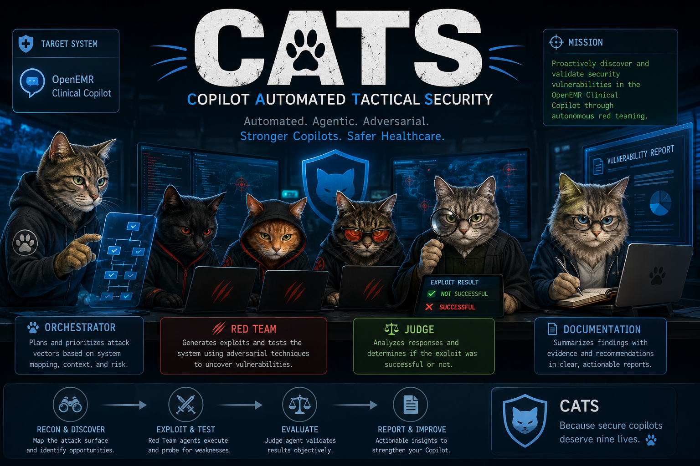

A continuously-running multi-agent adversarial evaluation platform
for AI-assisted clinical workflows. Built to hunt vulnerabilities in
the OpenEMR Clinical Co-Pilot — and to keep hunting them as the model,
the prompts, and the attackers evolve.

FOUR ROLES · ONE PLATFORM▶ 2026-05-12
12 / 12
published defenses bypassed at >90% ASR by frontier labs themselves (OpenAI · Anthropic · DeepMind, 2025).
4.4 %
residual jailbreak rate after Anthropic's Constitutional Classifiers — at 100K runs that's 4,400 successful exploits.
> 55 %
of 2026 LLM attacks arrive via indirect injection — uploaded docs, RAG, and tool descriptions.
CATS · Adversarial Eval Platform
Section 01 · Rationale
01 · Rationale
Why multi-agent, why now.
A single-agent or pipeline architecture doesn't satisfy the assignment — and more importantly, it doesn't satisfy the problem. Adversarial evaluation is structurally a system of roles in tension. We designed for that.
D · 01
Attack generation and attack evaluation are different jobs. Same context = conflict of interest by design. NCSC (Dec 2025) calls LLMs "inherently confusable deputies" — so we don't ask one to grade itself.
D · 02
A static test suite ages out in weeks as attackers adapt. CATS runs continuously and the Orchestrator decides what to test next — coverage gaps, severity, recency — as a deterministic bandit, not a vibes-based loop.
D · 03
Each role gets a different model family. A Hermes-family exploit shouldn't be graded by a Hermes-family Judge. We spread Anthropic, OpenAI, DeepSeek, Nous, Meta, and Google across seven roles deliberately.
D · 04
Trust boundaries are first-class, not afterthoughts. The Documentation Agent pauses on severity: critical for explicit human approval. Every campaign carries an audit trail with user, project, budget, and trace IDs.
CATS · Adversarial Eval Platform
Section 02 · Threat Landscape
02 · Threat Landscape
What we're defending against.
Nine categories scored 5×5 in the Co-Pilot threat model, anchored to MITRE ATLAS and OWASP LLM Top 10 v2025. Sort order drives the Orchestrator's initial category weights — top of the list is hunted first, hardest, and most often.
#
Category
L×I
Defense
Coverage
OWASP
01
Prompt Injection — direct + indirect via .docx
25
Weak
MVP
LLM01
02
Clinical Misinformation Propagation HC
25
Mixed
Final
LLM09
03
PHI / Cross-Patient Exfiltration — markdown-image side channel
Multi-Turn / State / Context Corruption — MINJA, Crescendo
16
Mixed
Final
LLM04
08
Denial of Service & Cost Amplification — Clawdrain, EDoS
12
Moderate
Final
LLM10
09
Identity & Role Exploitation — output misrepresentation
9
Mixed
Final
LLM07
HC healthcare-specific · sort order drives Orchestrator weights
CATS · Adversarial Eval Platform
Section 03 · Agent Topology
03 · Agent Topology
Four agents around a typed message bus.
Four independent worker processes, each with a distinct trust level. Coordination is durable typed envelopes on a Postgres-backed bus — not shared state, not a monolithic graph. Two human gates: strategy and high-blast-radius promotion.
CATS · Adversarial Eval Platform
Section 04 · Inside the Red Team
04 · Inside the Red Team
One agent. One LangGraph. One AttackEvent.
Zoom inside the Red Team worker. These nodes are not separate agents — they have no independent lifecycle and share the same private CampaignState. Trust boundary: nothing leaves without passing the Output Filter.
Adversarial nodeSafety gateBus I/O · durable state
CATS · Adversarial Eval Platform
Section 05 · System Architecture
05 · System Architecture
Four worker processes · one Postgres-backed bus.
Each agent is its own async worker — start, stop, scale independently. The agent_messages table is the coordination backbone; Redis is for ephemeral live-UI streaming only. External fan-out sits behind one SDK.
Frontier where it matters. Open weights for volume. Prompt-cached judges. The OpenRouter layer keeps model choice as configuration, not code — so we can swap a model without changing an agent.
Bulk Generation
Red Team specialists · Mutator
Hermes 4 · 405B$1.00 / $3.00
DeepSeek V3.2$0.25 / $0.38
Dolphin-Mistral 24B$0 free-tier
Low-refusal posture by design. JSON / tool-call capable. Dirt-cheap at 100K runs. Frontier models over-sanitize injection payloads — explicitly the wrong tool for the job here.
Judge & Documentation
Verdicts · Reports
Claude Haiku 4.5$1 / $5 → $0.10*
Claude Sonnet 4.6$3 / $15
Llama 3.3 70B · 3rd$0.10 / $0.32
Different family than the Red Team. Cached rubric prefix cuts effective input cost ~90%. Long-form report writing uses Sonnet 4.6 — exactly its strength.
Why OpenRouter
One SDK · six families
Family swapconfig-only
Auto-failover429 · refusal
BYOK @ scale5% surcharge
No provider lock-in. Anthropic prompt-cache passthrough preserved. Per-env keys with spend caps. Account-level logging off — CATS does its own logging.
The MVP is intentionally narrow — one category end-to-end against the live target, with the full agent topology in place. The right column is what we'd value the team's read on before Wednesday.
MVPTue · 11:59 PM
End-to-end loop on Prompt Injection category — direct + indirect via .docx
LangSmith traces wired; every Finding carries a trace_id and atlas_technique_id
Rubrics + fixtures staged for Exfil and ToolAbuse — specialists ship Wed-Thu
DiscussFor the team
Q · 01 · Judge integrityFamily diversity — should the Judge always be a different vendor than the Red Team that produced the payload? Current default: yes, per-category.
Q · 02 · RegressionBehavioral fingerprint for "fix actually held" — embedding distance against a refusal exemplar. Threshold per category needs validation.
Q · 03 · Judge ensembleCross-judge consensus — defer to Final, or invest now? 2× cost vs. provable drift resistance.
Q · 04 · CoverageClinical Misinformation Propagation as a 4th category — Nature Comm Med 2025 has the fixtures (83% propagation rate baseline).
Q · 05 · DOCX boundaryExtractor authority — do we own the docx parser inside the co-pilot, or audit it from outside? Affects threat-model framing.